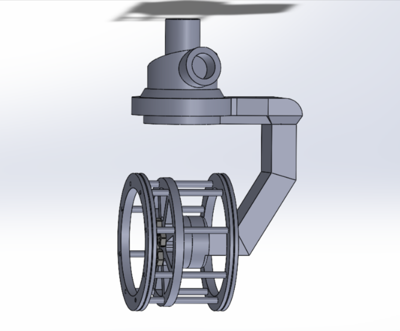

NASA Psyche Rover
Designed a robotic explorer inspired by NASA’s Curiosity rover to traverse the metallic surface of asteroid Psyche. Integrated collapsible mesh wheels and articulating arms for mobility across uneven terrain. Performed structural analysis and calculated von Mises stresses under extreme low-gravity and radiation conditions.
Critical Mach Number Analysis
Analyzed the critical Mach number of a NACA 1412 airfoil at a 4° angle of attack to verify against theoretical values. Results were used to cross-check tabulated compressibility thresholds and study early onset of transonic effects.
High-Pressure Rinse (HPR) Nozzle

Created a custom nozzle fixture to enhance superconducting cavity cleaning at the FRIB. Designed to mount on an autonomous robot operating in a cleanroom environment, improving precision and reducing manual contamination risks.
PID Tuning – Mini-Segway

Tuned a mini-Segway robot to autonomously navigate an obstacle course within a time constraint. Used iterative tuning of proportional, integral, and derivative gains to optimize performance and stability.
Borescope Fixture

Designed a precision fixture that attaches to rinse ports of superconducting cavities, reducing port diameter to guide a borescope camera safely through the niobium-lined interior. Prevents scratching and improves inspection reliability.